Applied examples of item deletion statistics
item-deletion-examples.RmdFormulas and Notation
Classification Accuracy Indices (CAI)
Proportion Selected: \(\text{PS}=\text{P(TP)}+\text{P(FP)}\)
Success Ratio: \(\text{SR}=\dfrac{\text{P(TP)}}{\text{P(TP)}+\text{P(FP)}}\)
Sensitivity: \(\text{SE}=\dfrac{\text{P(TP)}}{\text{P(TP)}+\text{P(FN)}}\)
Specificity: \(\text{SP}=\dfrac{\text{P(TN)}}{\text{P(TN)}+\text{P(FP)}}\)
Unless otherwise indicated, we will assume that the full item set (length $\(J\)) is used and that partial factorial invariance (PFI) holds.
If strict factorial invariance (SFI) holds, this will be denoted as \(\text{CAI}_{\text{sfi}}\), e.g., \(\text{SE}_{\text{sfi}}\) for SE under SFI.
A CAI computed on an item set excluding item \(j \in \{1,\ldots,J\}\) is denoted \(\text{CAI}^{|j}\), e.g., \(\text{SE}^{|2}\) if SE is computed on the item set excluding the second item.
Aggregate Classification Accuracy Indices \(\left(\overline{\text{CAI}}\right)\)
Given \(p_f = 1 - p_r\),
Aggregate SR: \[\overline{\text{SR}} = \dfrac{\text{TP}_{r}\times p_r + \text{TP}_{f}\times p_f}{\text{TP}_{r}\times p_r + \text{TP}_{f}\times p_f + \text{FP}_{r}\times p_r + \text{FP}_{f}\times p_f}\]
Aggregate SE: \[\overline{\text{SE}} = \dfrac{\text{TP}_{r}\times p_r + \text{TP}_{f}\times p_f}{\text{TP}_{r}\times p_r + \text{TP}_{f}\times p_f + \text{FN}_{r}\times p_r + \text{FN}_{f}\times p_f}\]
Aggregate SP: \[\overline{\text{SP}} = \dfrac{\text{TN}_{r}\times p_r + \text{TN}_{f}\times p_f}{\text{TN}_{r}\times p_r + \text{TN}_{f}\times p_f + \text{FP}_{r}\times p_r + \text{FP}_{f}\times p_f}\]
\(\overline{\text{CAI}}\) is only computed for the partial invariance case (hence, the only comparison we discuss in relation to \(\overline{\text{CAI}}\) is item deletion).
Indices for the impact of item bias
Impact of removing an item on \(\overline{\text{CAI}}\)
\(h^{|j}\overline{\text{CAI}}\): Cohen’s \(h\) effect size for the improvement/decrease in aggregate CAI under PFI when the \(j\)-th item is removed: \[h^{|j}\overline{\text{CAI}} = 2\arcsin\left(\sqrt{\overline{\text{CAI}}}\right)-2\arcsin\left(\sqrt{\overline{\text{CAI}}^{|j}}\right)\]
A negative \(h^{|j}\overline{\text{CAI}}\) indicates an improvement (as \(h^{|j}\overline{\text{CAI}}<0 \iff \overline{\text{CAI}}<\overline{\text{CAI}}^{|j}\)) whereas a positive \(h^{|j}\overline{\text{CAI}}\) indicates a deterioration in performance.
Comparing CAI for reference (R) vs. expected focal (Ef) groups
\(h^{\text{r-Ef}}\text{CAI}\): Cohen’s \(h\) effect size quantifying the discrepancy between \(\text{CAI}_{\text{r}}\) vs. \(\text{Ef}\) for the full set of items under PFI. \[ \begin{align*} h^{\text{r-Ef}}\text{CAI}&= 2\text{arcsin}\left(\sqrt{\text{CAI}_{ \text{r}}}\right)-2\text{arcsin}\left(\sqrt{\text{CAI}_{\text{Ef}}}\right) \end{align*} \]
\(h^{\text{r-Ef}}\text{CAI}^{|j}\): Cohen’s \(h\) effect size quantifying the discrepancy between \(\text{CAI}_{\text{r}}^{|j}\) vs. \(\text{CAI}_{\text{Ef}}^{|j}\) for the item set excluding item \(j\) under PFI. \[ \begin{align*} h^{\text{r-Ef}}\text{CAI}^{|j} &= 2\text{arcsin}\left(\sqrt{\text{CAI}_{ \text{r}}^{|j}}\right)-2\text{arcsin}\left(\sqrt{\text{CAI}_{\text{Ef}}^{|j}}\right) \end{align*} \]
Impact of removing an item on the discrepancy between \(h^{\text{r-Ef}}\text{CAI}\) vs. \(h^{\text{r-Ef}}\text{CAI}^{|j}\)
\(\Delta^{|j} h^{\text{r-Ef}}\text{CAI}\): Cohen’s \(h\) effect size quantifying the discrepancy between \(h^{\text{r-Ef}}\text{CAI}\) vs. \(h^{\text{r-Ef}}\text{CAI}^{|j}\). In other words, the effect size of the change in bias when the \(j\)-th item is dropped.
\[ \begin{align*} \Delta^{|j} h^{\text{r-Ef}}\text{CAI}&= | h^{\text{r-Ef}}\text{CAI}| - | h^{\text{r-Ef}}\text{CAI}^{|j}| \end{align*} \]
Illustrative Example: CES-D
Example based on Zhang et al.’s 2011 examination of the Center for Epidemiological Studies Depression (CES-D) Scale (Radloff, 1977).
We first demonstrate the use of the item deletion indices and relevant functions on the full four-dimensional CES-D Scale, assuming that selection (binary classification) will be based on scores on the full scale. Then, we demonstrate how item deletion can be performed on the scale after the deletion of one item. Finally, we demonstrate the use of the item deletion indices on a single-dimensional scale by treating each subscale of the CES-D Scale as a separate factor, and assuming that classification decisions will be based on the subscale scores. For all analyses, we will consider the deletion of one item at a time.
# Zhang et al. (2011) BMC Medical Research Methodology, Tables 3-4 on page 7
# Reference group: Chinese, Focal group: Dutch
pmix_CESD_r <- 4903/(1903+4903)
# Unstandardized factor loadings
lambda_SOM_r <- lambda_SOM_f <- c(1.00, 1.03, 1.18, 1.29, 1.07, 1.02, 1.26)
lambda_DEP_r <- lambda_DEP_f <- c(1.00, 1.13, 0.82, 0.91, 1.11, 0.92, 1.06)
lambda_POS_r <- lambda_POS_f <- c(1.00, 1.66, 2.30, 2.29)
lambda_INT_r <- lambda_INT_f <- c(1.00, 0.94)
# Unstandardized intercepts
nu_SOM_r <- c(0.69, 0.56, 0.78, 0.81, 0.88, 0.74, 0.70)
nu_SOM_f <- c(0.69, 0.56, 0.78, 0.80, 0.88, 0.74, 0.70)
nu_DEP_r <- c(0.52, 0.55, 0.57, 0.42, 0.57, 0.50, 0.56)
nu_DEP_f <- c(0.52, 0.55, 0.30, 0.42, 0.57, 0.50, 0.56)
nu_POS_r <- c(1.54, 1.36, 1.16, 1.08)
nu_POS_f <- c(0.68, 1.36, 1.16, 1.08)
nu_INT_r <- nu_INT_f <- c(0.44, 0.41)
# Unstandardized uniqueness
Theta_SOM_r <- Theta_SOM_f <- diag(c(0.45, 0.37, 0.39, 0.40, 0.57, 0.51, 0.37))
Theta_DEP_r <- diag(c(0.29, 0.30, 0.41, 0.31, 0.29, 0.27, 0.24))
Theta_DEP_f <- diag(c(0.29, 0.13, 0.09, 0.14, 0.29, 0.27, 0.24))
Theta_POS_r <- diag(c(1.20, 0.81, 0.32, 0.32))
Theta_POS_f <- diag(c(0.72, 0.81, 0.32, 0.32))
Theta_INT_r <- diag(c(0.19, 0.23))
Theta_INT_f <- diag(c(0.19, 0.08))
# Latent mean differences
alpha_SOM_r <- 0
alpha_DEP_r <- 0
alpha_POS_r <- 0
alpha_INT_r <- 0
alpha_SOM_f <- -0.261
alpha_DEP_f <- -0.259
alpha_POS_f <- -0.125
alpha_INT_f <- -0.323
# Latent mean variances
psi_SOM_r <- 0.482^2
psi_SOM_f <- 0.324^2
psi_DEP_r <- 0.570^2
psi_DEP_f <- 0.318^2
psi_POS_r <- 0.354^2
psi_POS_f <- 0.329^2
psi_INT_r <- 0.574^2
psi_INT_f <- 0.184^2
# Cutoff of 16/60 on full scale. 20 items, each item scored 0-3.Full 4-Factor CES-D Scale
lambda_CESD_r <- rbind(cbind(lambda_SOM_r, rep(0, 7), rep(0, 7), rep(0, 7)),
cbind(rep(0, 7), lambda_DEP_r, rep(0, 7), rep(0, 7)),
cbind(rep(0, 4), rep(0, 4), lambda_POS_r, rep(0, 4)),
cbind(rep(0, 2), rep(0, 2), rep(0, 2), lambda_INT_r))
lambda_CESD_f <- rbind(cbind(lambda_SOM_f, rep(0, 7), rep(0, 7), rep(0, 7)),
cbind(rep(0, 7), lambda_DEP_f, rep(0, 7), rep(0, 7)),
cbind(rep(0, 4), rep(0, 4), lambda_POS_f, rep(0, 4)),
cbind(rep(0, 2), rep(0, 2), rep(0, 2), lambda_INT_f))
psi_CESD_r <- c(psi_SOM_r, psi_DEP_r, psi_POS_r, psi_INT_r)
psi_CESD_f <- c(psi_SOM_f, psi_DEP_f, psi_POS_f, psi_INT_f)
alpha_CESD_r <- c(alpha_SOM_r, alpha_DEP_r, alpha_POS_r, alpha_INT_r)
alpha_CESD_f <- c(alpha_SOM_f, alpha_DEP_f, alpha_POS_f, alpha_INT_f)
Theta_CESD_r <- diag(c(0.45, 0.37, 0.39, 0.40, 0.57, 0.51, 0.37, #SOM
0.29, 0.30, 0.41, 0.31, 0.29, 0.27, 0.24, #DEP
1.20, 0.81, 0.32, 0.32, #POS
0.19, 0.23 #INT
))
Theta_CESD_f <- diag(c(0.45, 0.37, 0.39, 0.40, 0.57, 0.51, 0.37, #SOM
0.29, 0.13, 0.09, 0.14, 0.29, 0.27, 0.24, #DEP
0.72, 0.81, 0.32, 0.32, #POS
0.19, 0.08 #INT
))
nu_CESD_r <- as.matrix(c(nu_SOM_r, nu_DEP_r, nu_POS_r, nu_INT_r))
nu_CESD_f <- as.matrix(c(nu_SOM_f, nu_DEP_f, nu_POS_f, nu_INT_f))
# From Miller et al. (1997) The Factor Structure of the CES-D in Two Surveys
# of Elderly Mexican Americans p.S264; the correlation matrix of latent variables
# based on the Hertzog et al. (1990) model.
corr_CESD <- matrix(c(1, .93, .58, .85,
.93, 1, .64, .88,
.58, .64, 1, .55,
.85, .88, .55, 1),
nrow = 4, ncol = 4, byrow = TRUE)
# Compute covariance matrix estimates for the focal and reference groups.
S_f <- diag(sqrt(psi_CESD_f))
S_r <- diag(sqrt(psi_CESD_r))
psi_CESD_f <- S_f %*% corr_CESD %*% S_f
psi_CESD_r <- S_r %*% corr_CESD %*% S_r
# The latent weights are specified to be proportional to the number of items
# in each subscale.
CESD_full <- item_deletion_h(cut_z = 16,
weights_item = c(rep(1, 20)),
weights_latent = c(7, 7, 4, 2),
alpha_r = alpha_CESD_r,
alpha_f = alpha_CESD_f,
psi_r = psi_CESD_r,
psi_f = psi_CESD_f,
lambda_r = lambda_CESD_r,
lambda_f = lambda_CESD_f,
nu_r = nu_CESD_r,
nu_f = nu_CESD_f,
Theta_r = Theta_CESD_r,
Theta_f = Theta_CESD_f,
plot_contour = FALSE,
n_dim = 4,
n_i_per_dim = c(7, 7, 4, 2),
pmix_ref = pmix_CESD_r)
CESD_full
#> ***********************************************************************
#> AGGREGATE CLASSIFICATION ACCURACY INDICES (CAI*)
#> ***********************************************************************
#> Aggregate CAI under PFI computed for item subsets:
#> PS* SR* SE* SP*
#> full 0.37 0.887 0.887 0.934
#> |4 0.37 0.883 0.883 0.931
#> |9 0.37 0.884 0.884 0.932
#> |10 0.37 0.887 0.887 0.934
#> |11 0.37 0.886 0.886 0.933
#> |15 0.37 0.886 0.886 0.933
#> |20 0.37 0.885 0.885 0.933
#>
#> Impact of deleting an item on aggregate CAI under PFI:
#> h(PS*) h(SR*) h(SE*) h(SP*)
#> |4 0 0.014 0.014 0.011
#> |9 0 0.010 0.010 0.007
#> |10 0 0.002 0.002 0.002
#> |11 0 0.005 0.005 0.003
#> |15 0 0.006 0.006 0.004
#> |20 0 0.006 0.006 0.005
#>
#> ***********************************************************************
#> Adverse Impact (AI) ratio for item subsets by
#> invariance condition:
#> ***********************************************************************
#> AI_SFI AI_PFI
#> full 1 0.908
#> |4 1 0.908
#> |9 1 0.904
#> |10 1 0.930
#> |11 1 0.905
#> |15 1 0.977
#> |20 1 0.908
#>
#> ***********************************************************************
#> COMPARING CAI FOR REFERENCE AND (EXPECTED) FOCAL
#> GROUPS
#> ***********************************************************************
#> Discrepancy between CAI of reference vs. Efocal groups under PFI:
#> h(PS) h(SR) h(SE) h(SP)
#> r-Ef 0.085 -0.157 0.141 -0.164
#> r-Ef|4 0.085 -0.152 0.139 -0.160
#> r-Ef|9 0.089 -0.160 0.147 -0.168
#> r-Ef|10 0.064 -0.120 0.104 -0.126
#> r-Ef|11 0.088 -0.159 0.146 -0.167
#> r-Ef|15 0.021 -0.047 0.026 -0.048
#> r-Ef|20 0.084 -0.151 0.142 -0.158
#> -----------------------------------------------------------------------
#> Impact of deleting an item on the discrepancy between
#> CAI of
#> reference vs. Efocal groups under PFI:
#> Δh(PS) Δh(SR) Δh(SE) Δh(SP)
#> r-Ef|4 0.000 0.005 0.003 0.004
#> r-Ef|9 -0.004 -0.003 -0.006 -0.004
#> r-Ef|10 0.021 0.037 0.037 0.038
#> r-Ef|11 -0.003 -0.002 -0.005 -0.003
#> r-Ef|15 0.064 0.110 0.116 0.116
#> r-Ef|20 0.000 0.006 -0.001 0.006Items 4, 9, 10, 11, 15, 19, and 20 are determined to be the biased items, and correspond to SOM 4, DEP 2, DEP 3, DEP 4, POS 1, INT 1, and INT 2 (effort, depressed, failure, fearful, good, dislike). As can be seen in the first output table, removing any of these items leads to some minor decreases in \(\overline{\text{CAI}}\) (lower aggregate classification accuracy), the effect size of which is small as illustrated in the second output table. The item the deletion of which brings the AI ratio closest to the ideal AI ratio of 1 is item 15, \(AI^{|15}=0.977\) (from \(AI=0.908\)), indicating that this item is a strong candidate for deletion. The second largest increase is proximity to \(AI^{|j}=1\) is achieved by the deletion of item 10 (DEP 3), with \(AI^{|10}=0.930\).
The comparison of CAI for the reference group with the expected CAI for the focal group in the next table shows that the discrepancy between \(\text{CAI}_r\) and \(\text{CAI}_{Ef}\) becomes smallest if item 15 is deleted as \(h^{\text{r-Ef}}\text{PS}=0.085\) goes down to \(h^{\text{r-Ef}}\text{PS}^{|15}=0.021\), \(h^{\text{r-Ef}}\text{SR}=-0.157\) goes up to \(h^{\text{r-Ef}}\text{SR}^{|15}=-0.047\), \(h^{\text{r-Ef}}\text{SE}=0.141\) goes down to \(h^{\text{r-Ef}}\text{SE}^{|15}=0.026\) and \(h^{\text{r-Ef}}\text{SP}=-0.164\) goes up to \(h^{\text{r-Ef}}\text{SP}^{|15}=-0.048\). Note that we judge improvement in the difference between \(\text{CAI}_r\) and \(\text{CAI}_{Ef}\) by the magnitude of the difference rather than the direction. In the comparison between CAI for reference vs. Efocal groups, the direction of the difference indicates the group that is benefiting from the bias. We would like to minimize bias regardless of group membership, but the signs of the indices nevertheless give valuable information about the classification process. The 10-th item is one other item that appears to lead to some reduction in the discrepancy between \(\text{CAI}_r\) and \(\text{CAI}_{Ef}\). Moving on to the final table, we see that removing the 15-th item would have the largest impact on the discrepancy between \(\text{CAI}_r\) and \(\text{CAI}_{Ef}\), followed by the deletion of the 10-th item.
Overall, the researcher may consider deleting either the 15-th or the
10-th item using their domain specific expertise and consulting existing
literature to choose between the two items. The output object from the
call to item_deletion_h() contains other tables that may
aid the researcher in this process. For instance, the outputs of
PartInv() may be examined for the two item deletion
scenarios:
All items retained:
CESD_full$PartInv$partial$outputlist$full
#> Partial invariance results:
#>
#> Proportion selected: 0.37
#> Cutpoint on the latent scale (xi): 1.053
#> Cutpoint on the observed scale (Z): 16
#> Adverse impact ratio (reference group: 'Reference'):
#> Focal
#> 0.908
#>
#> Classification Accuracy Indices:
#> Reference Focal E_R(Focal)
#> True Positive 0.412 0.112 0.391
#> False Positive 0.045 0.032 0.024
#> True Negative 0.500 0.817 0.522
#> False Negative 0.043 0.039 0.063
#> Proportion Selected 0.457 0.144 0.415
#> Success Ratio 0.901 0.779 0.942
#> Sensitivity 0.906 0.743 0.861
#> Specificity 0.917 0.963 0.956
#>
#>
#> Strict invariance results:
#>
#> Proportion selected: 0.369
#> Cutpoint on the latent scale (xi): 1.059
#> Cutpoint on the observed scale (Z): 16
#>
#> Classification Accuracy Indices:
#> Reference Focal
#> True Positive 0.406 0.121
#> False Positive 0.039 0.052
#> True Negative 0.507 0.798
#> False Negative 0.048 0.029
#> Proportion Selected 0.445 0.173
#> Success Ratio 0.913 0.701
#> Sensitivity 0.895 0.807
#> Specificity 0.929 0.939Subset excluding item 15:
CESD_full$PartInv$partial$outputlist$`|15`
#> Partial invariance results:
#>
#> Proportion selected: 0.37
#> Cutpoint on the latent scale (xi): 1.053
#> Cutpoint on the observed scale (Z): 15.95
#> Adverse impact ratio (reference group: 'Reference'):
#> Focal
#> 0.977
#>
#> Classification Accuracy Indices:
#> Reference Focal E_R(Focal)
#> True Positive 0.407 0.121 0.404
#> False Positive 0.041 0.046 0.034
#> True Negative 0.505 0.803 0.511
#> False Negative 0.047 0.029 0.051
#> Proportion Selected 0.448 0.168 0.438
#> Success Ratio 0.909 0.723 0.922
#> Sensitivity 0.896 0.805 0.888
#> Specificity 0.925 0.945 0.937
#>
#>
#> Strict invariance results:
#>
#> Proportion selected: 0.37
#> Cutpoint on the latent scale (xi): 1.053
#> Cutpoint on the observed scale (Z): 15.955
#>
#> Classification Accuracy Indices:
#> Reference Focal
#> True Positive 0.406 0.123
#> False Positive 0.039 0.053
#> True Negative 0.507 0.796
#> False Negative 0.048 0.028
#> Proportion Selected 0.445 0.176
#> Success Ratio 0.913 0.699
#> Sensitivity 0.894 0.815
#> Specificity 0.929 0.938The user can also supply a cut-off score for the delete-one scenarios instead of letting the function compute the proportions selected under partial and strict invariance and using these proportions in the delete-one scenarios:
CESD_full_with_cutoff <- item_deletion_h(cut_z = 16,
weights_item = c(rep(1, 20)),
weights_latent = c(7, 7, 4, 2),
alpha_r = alpha_CESD_r,
alpha_f = alpha_CESD_f,
psi_r = psi_CESD_r,
psi_f = psi_CESD_f,
lambda_r = lambda_CESD_r,
lambda_f = lambda_CESD_f,
nu_r = nu_CESD_r,
nu_f = nu_CESD_f,
Theta_r = Theta_CESD_r,
Theta_f = Theta_CESD_f,
plot_contour = FALSE,
n_dim = 4,
n_i_per_dim = c(7, 7, 4, 2),
pmix_ref = pmix_CESD_r,
delete_one_cutoff = 16/60*(60-3))
CESD_full_with_cutoff
#> ***********************************************************************
#> AGGREGATE CLASSIFICATION ACCURACY INDICES (CAI*)
#> ***********************************************************************
#> Aggregate CAI under PFI computed for item subsets:
#> PS* SR* SE* SP*
#> full 0.370 0.887 0.887 0.934
#> |4 0.396 0.887 0.887 0.926
#> |9 0.397 0.889 0.889 0.927
#> |10 0.400 0.892 0.892 0.928
#> |11 0.403 0.891 0.891 0.927
#> |15 0.396 0.890 0.890 0.928
#> |20 0.400 0.890 0.890 0.927
#>
#> Impact of deleting an item on aggregate CAI under PFI:
#> h(PS*) h(SR*) h(SE*) h(SP*)
#> |4 -0.053 0.001 0.001 0.031
#> |9 -0.056 -0.004 -0.004 0.028
#> |10 -0.062 -0.013 -0.013 0.024
#> |11 -0.068 -0.012 -0.012 0.029
#> |15 -0.055 -0.009 -0.009 0.024
#> |20 -0.062 -0.009 -0.009 0.028
#>
#> ***********************************************************************
#> Adverse Impact (AI) ratio for item subsets by
#> invariance condition:
#> ***********************************************************************
#> AI_SFI AI_PFI
#> full 1 0.908
#> |4 1 0.913
#> |9 1 0.909
#> |10 1 0.934
#> |11 1 0.911
#> |15 1 0.979
#> |20 1 0.914
#>
#> ***********************************************************************
#> COMPARING CAI FOR REFERENCE AND (EXPECTED) FOCAL
#> GROUPS
#> ***********************************************************************
#> Discrepancy between CAI of reference vs. Efocal groups under PFI:
#> h(PS) h(SR) h(SE) h(SP)
#> r-Ef 0.085 -0.157 0.141 -0.164
#> r-Ef|4 0.085 -0.148 0.135 -0.164
#> r-Ef|9 0.089 -0.155 0.143 -0.172
#> r-Ef|10 0.064 -0.116 0.101 -0.129
#> r-Ef|11 0.088 -0.154 0.142 -0.172
#> r-Ef|15 0.020 -0.045 0.025 -0.049
#> r-Ef|20 0.084 -0.146 0.138 -0.163
#> -----------------------------------------------------------------------
#> Impact of deleting an item on the discrepancy between
#> CAI of
#> reference vs. Efocal groups under PFI:
#> Δh(PS) Δh(SR) Δh(SE) Δh(SP)
#> r-Ef|4 0.000 0.009 0.006 0.000
#> r-Ef|9 -0.004 0.002 -0.002 -0.008
#> r-Ef|10 0.021 0.041 0.040 0.035
#> r-Ef|11 -0.003 0.003 0.000 -0.008
#> r-Ef|15 0.064 0.112 0.116 0.115
#> r-Ef|20 0.000 0.011 0.003 0.001Let’s assume for the sake of illustration that the researcher decides to drop item 15 (\(good\)). We can repeat the process with the new item weights:
CESD_full_drop15 <- item_deletion_h(
cut_z = 16/60*(60-3),
weights_item = c(rep(1,14), 0, rep(4/3, 3), 1, 1),
weights_latent = c(7, 7, 3, 2),
alpha_r = alpha_CESD_r,
alpha_f = alpha_CESD_f,
psi_r = psi_CESD_r,
psi_f = psi_CESD_f,
lambda_r = lambda_CESD_r,
lambda_f = lambda_CESD_f,
nu_r = nu_CESD_r,
nu_f = nu_CESD_f,
Theta_r = Theta_CESD_r,
Theta_f = Theta_CESD_f,
pmix_ref = pmix_CESD_r,
plot_contour = FALSE,
n_dim = 4,
n_i_per_dim = c(7, 7, 3, 2))
CESD_full_drop15
#> ***********************************************************************
#> AGGREGATE CLASSIFICATION ACCURACY INDICES (CAI*)
#> ***********************************************************************
#> Aggregate CAI under PFI computed for item subsets:
#> PS* SR* SE* SP*
#> full 0.396 0.886 0.886 0.925
#> |4 0.396 0.882 0.882 0.922
#> |9 0.396 0.883 0.883 0.923
#> |10 0.396 0.885 0.885 0.924
#> |11 0.396 0.885 0.885 0.924
#> |20 0.396 0.881 0.881 0.922
#>
#> Impact of deleting an item on aggregate CAI under PFI:
#> h(PS*) h(SR*) h(SE*) h(SP*)
#> |4 0 0.013 0.013 0.011
#> |9 0 0.009 0.009 0.007
#> |10 0 0.004 0.004 0.003
#> |11 0 0.004 0.004 0.003
#> |20 0 0.016 0.016 0.012
#>
#> ***********************************************************************
#> Adverse Impact (AI) ratio for item subsets by
#> invariance condition:
#> ***********************************************************************
#> AI_SFI AI_PFI
#> full 1 0.979
#> |4 1 0.979
#> |9 1 0.975
#> |10 1 0.999
#> |11 1 0.975
#> |20 1 0.978
#>
#> ***********************************************************************
#> COMPARING CAI FOR REFERENCE AND (EXPECTED) FOCAL
#> GROUPS
#> ***********************************************************************
#> Discrepancy between CAI of reference vs. Efocal groups under PFI:
#> h(PS) h(SR) h(SE) h(SP)
#> r-Ef 0.020 -0.044 0.025 -0.047
#> r-Ef|4 0.020 -0.041 0.024 -0.045
#> r-Ef|9 0.024 -0.048 0.031 -0.052
#> r-Ef|10 0.001 -0.011 -0.007 -0.011
#> r-Ef|11 0.024 -0.048 0.031 -0.052
#> r-Ef|20 0.021 -0.041 0.028 -0.046
#> -----------------------------------------------------------------------
#> Impact of deleting an item on the discrepancy between
#> CAI of
#> reference vs. Efocal groups under PFI:
#> Δh(PS) Δh(SR) Δh(SE) Δh(SP)
#> r-Ef|4 0.001 0.002 0.001 0.002
#> r-Ef|9 -0.003 -0.004 -0.006 -0.005
#> r-Ef|10 0.020 0.032 0.017 0.036
#> r-Ef|11 -0.003 -0.004 -0.006 -0.005
#> r-Ef|20 -0.001 0.002 -0.003 0.002All items retained:
CESD_full_drop15$PartInv$partial$outputlist$full
#> Partial invariance results:
#>
#> Proportion selected: 0.396
#> Cutpoint on the latent scale (xi): 0.399
#> Cutpoint on the observed scale (Z): 15.2
#> Adverse impact ratio (reference group: 'Reference'):
#> Focal
#> 0.979
#>
#> Classification Accuracy Indices:
#> Reference Focal E_R(Focal)
#> True Positive 0.433 0.141 0.429
#> False Positive 0.042 0.053 0.036
#> True Negative 0.476 0.772 0.482
#> False Negative 0.050 0.034 0.053
#> Proportion Selected 0.475 0.194 0.465
#> Success Ratio 0.911 0.728 0.923
#> Sensitivity 0.897 0.808 0.889
#> Specificity 0.918 0.936 0.931
#>
#>
#> Strict invariance results:
#>
#> Proportion selected: 0.397
#> Cutpoint on the latent scale (xi): 0.391
#> Cutpoint on the observed scale (Z): 15.2
#>
#> Classification Accuracy Indices:
#> Reference Focal
#> True Positive 0.432 0.143
#> False Positive 0.040 0.060
#> True Negative 0.477 0.765
#> False Negative 0.051 0.032
#> Proportion Selected 0.472 0.203
#> Success Ratio 0.915 0.706
#> Sensitivity 0.895 0.817
#> Specificity 0.922 0.928Subset excluding item 10:
CESD_full_drop15$PartInv$partial$outputlist$`|10`
#> Partial invariance results:
#>
#> Proportion selected: 0.396
#> Cutpoint on the latent scale (xi): 0.399
#> Cutpoint on the observed scale (Z): 15.238
#> Adverse impact ratio (reference group: 'Reference'):
#> Focal
#> 0.999
#>
#> Classification Accuracy Indices:
#> Reference Focal E_R(Focal)
#> True Positive 0.431 0.143 0.432
#> False Positive 0.041 0.058 0.039
#> True Negative 0.477 0.767 0.478
#> False Negative 0.051 0.032 0.050
#> Proportion Selected 0.472 0.201 0.471
#> Success Ratio 0.914 0.711 0.917
#> Sensitivity 0.894 0.820 0.896
#> Specificity 0.921 0.930 0.924
#>
#>
#> Strict invariance results:
#>
#> Proportion selected: 0.396
#> Cutpoint on the latent scale (xi): 0.399
#> Cutpoint on the observed scale (Z): 15.244
#>
#> Classification Accuracy Indices:
#> Reference Focal
#> True Positive 0.431 0.143
#> False Positive 0.040 0.060
#> True Negative 0.477 0.766
#> False Negative 0.051 0.032
#> Proportion Selected 0.472 0.202
#> Success Ratio 0.915 0.705
#> Sensitivity 0.894 0.816
#> Specificity 0.922 0.928CES-D Somatic Complaints Factor
# Items: bothered, appetite, mind, effort, sleep, talk, get going
CESD_som <- item_deletion_h(cut_z = 16/60*7*3,
weights_item = c(rep(1,7)),
weights_latent = 1,
alpha_r = alpha_SOM_r,
alpha_f = alpha_SOM_f,
psi_r = psi_SOM_r,
psi_f = psi_SOM_f,
lambda_r = lambda_SOM_r,
lambda_f = lambda_SOM_f,
nu_r = nu_SOM_r,
nu_f = nu_SOM_f,
Theta_r = Theta_SOM_r,
Theta_f = Theta_SOM_f,
pmix_ref = pmix_CESD_r,
plot_contour = FALSE,
n_dim = 1)
CESD_som
#> ***********************************************************************
#> AGGREGATE CLASSIFICATION ACCURACY INDICES (CAI*)
#> ***********************************************************************
#> Aggregate CAI under PFI computed for item subsets:
#> PS* SR* SE* SP*
#> full 0.388 0.825 0.825 0.889
#> |4 0.388 0.807 0.807 0.878
#>
#> Impact of deleting an item on aggregate CAI under PFI:
#> h(PS*) h(SR*) h(SE*) h(SP*)
#> |4 0 0.045 0.045 0.035
#>
#> ***********************************************************************
#> Adverse Impact (AI) ratio for item subsets by
#> invariance condition:
#> ***********************************************************************
#> AI_SFI AI_PFI
#> full 1 0.998
#> |4 1 1.000
#>
#> ***********************************************************************
#> COMPARING CAI FOR REFERENCE AND (EXPECTED) FOCAL
#> GROUPS
#> ***********************************************************************
#> Discrepancy between CAI of reference vs. Efocal groups under PFI:
#> h(PS) h(SR) h(SE) h(SP)
#> r-Ef 0.002 -0.002 0.003 -0.003
#> r-Ef|4 0.000 0.000 0.000 0.000
#> -----------------------------------------------------------------------
#> Impact of deleting an item on the discrepancy between
#> CAI of
#> reference vs. Efocal groups under PFI:
#> Δh(PS) Δh(SR) Δh(SE) Δh(SP)
#> r-Ef|4 0.002 0.002 0.003 0.003The first table illustrates that removing item 4 from the Somatic Complaints subscale leads to decreases in aggregate SR, aggregate SE, and aggregate SP, suggesting worse overall performance if this item is dropped. The third table shows that the deletion of item 4 brings the AI ratio from the already-high \(0.998\) to \(1\). Similarly, removing this item brings the already small difference between the reference and Efocal groups (ranging between \(-0.003\) and \(0.003\)) to \(0\) with a very small effect size of \(0.002\) to \(0.003\). These findings suggest that removing the fourth item will harm or lead to a negligible improvement in CAI, therefore the full item set should be retained.
CES-D Depressive Affect Factor
# Items: blues, depressed, failure, fearful, lonely, crying, sad
CESD_dep <- item_deletion_h(cut_z = 16/60*7*3,
weights_item = c(rep(1,7)),
weights_latent = 1,
alpha_r = alpha_DEP_r,
alpha_f = alpha_DEP_f,
psi_r = psi_DEP_r,
psi_f = psi_DEP_f,
lambda_r = lambda_DEP_r,
lambda_f = lambda_DEP_f,
nu_r = nu_DEP_r,
nu_f = nu_DEP_f,
Theta_r = Theta_DEP_r,
Theta_f = Theta_DEP_f,
pmix_ref = pmix_CESD_r,
plot_contour = FALSE,
n_dim = 1)
CESD_dep
#> ***********************************************************************
#> AGGREGATE CLASSIFICATION ACCURACY INDICES (CAI*)
#> ***********************************************************************
#> Aggregate CAI under PFI computed for item subsets:
#> PS* SR* SE* SP*
#> full 0.25 0.831 0.831 0.943
#> |2 0.25 0.814 0.814 0.938
#> |3 0.25 0.823 0.823 0.941
#> |4 0.25 0.820 0.820 0.940
#>
#> Impact of deleting an item on aggregate CAI under PFI:
#> h(PS*) h(SR*) h(SE*) h(SP*)
#> |2 0 0.044 0.044 0.024
#> |3 0 0.020 0.020 0.011
#> |4 0 0.027 0.027 0.015
#>
#> ***********************************************************************
#> Adverse Impact (AI) ratio for item subsets by
#> invariance condition:
#> ***********************************************************************
#> AI_SFI AI_PFI
#> full 1 0.920
#> |2 1 0.907
#> |3 1 0.993
#> |4 1 0.910
#>
#> ***********************************************************************
#> COMPARING CAI FOR REFERENCE AND (EXPECTED) FOCAL
#> GROUPS
#> ***********************************************************************
#> Discrepancy between CAI of reference vs. Efocal groups under PFI:
#> h(PS) h(SR) h(SE) h(SP)
#> r-Ef 0.056 -0.167 0.047 -0.130
#> r-Ef|2 0.065 -0.165 0.067 -0.133
#> r-Ef|3 0.004 -0.052 -0.033 -0.036
#> r-Ef|4 0.063 -0.164 0.065 -0.131
#> -----------------------------------------------------------------------
#> Impact of deleting an item on the discrepancy between
#> CAI of
#> reference vs. Efocal groups under PFI:
#> Δh(PS) Δh(SR) Δh(SE) Δh(SP)
#> r-Ef|2 -0.009 0.002 -0.020 -0.003
#> r-Ef|3 0.052 0.115 0.014 0.094
#> r-Ef|4 -0.007 0.003 -0.018 0.000item_deletion_h has determined items 2, 3, and 4 to
contain some level of bias. We see from the first table that \(\overline{\text{SP}}\) is around \(0.940\) for all item deletion scenarios
while \(\overline{\text{SR}}\) and
\(\overline{\text{SE}}\) are slightly
lower at around \(0.815\) to \(830\), suggesting that the Depressive
Affect subscale is best at not selecting the individuals who should not
be selected. We see that aggregate SE, aggregate SR, and aggregate SP
for the full item set are higher than the other item subsets, suggesting
that the removal of a biased item will likely not improve aggregate CAI.
\(h\) values in the second table range
between \(0.010\) to \(0.045\), showing that the impact of
removing an item will be quite small.
The AI ratio table shows that while removing the third item increases AI from \(0.920\) to \(0.993\), the bias is not fully eliminated as \(AI^{|3}<1\). The removal of either item 2 or item 4 increases the discrepancy between the reference and Efocal groups. The second-to-last table illustrates that the removal of item 3 brings \(h^{\text{r-Ef}}\text{CAI}\) closer to 0, indicating an improvement that has a minimal-small effect size as shown in the final table. Removing any other item harms CAI.
Given the lack of agreement between indices on whether the deletion of an item improves or harms performance and the small effect size of the potential improvement, it may be best to retain all items or choose an alternative method to item deletion for this subscale.
CES-D Positive Affect Factor
# Items: good (biased), hopeful, happy, enjoyed
CESD_pos <- item_deletion_h(cut_z = 16/60*12,
weights_item = c(rep(1,4)),
weights_latent = 1,
alpha_r = alpha_POS_r,
alpha_f = alpha_POS_f,
psi_r = psi_POS_r,
psi_f = psi_POS_f,
lambda_r = lambda_POS_r,
lambda_f = lambda_POS_f,
nu_r = nu_POS_r,
nu_f = nu_POS_f,
Theta_r = Theta_POS_r,
Theta_f = Theta_POS_f,
pmix_ref = pmix_CESD_r,
plot_contour = FALSE,
user_specified_items = c(1:4))
CESD_pos
#> ***********************************************************************
#> AGGREGATE CLASSIFICATION ACCURACY INDICES (CAI*)
#> ***********************************************************************
#> Aggregate CAI under PFI computed for item subsets:
#> PS* SR* SE* SP*
#> full 0.679 0.883 0.883 0.752
#> |1 0.679 0.894 0.894 0.777
#> |2 0.679 0.876 0.876 0.738
#> |3 0.679 0.852 0.852 0.688
#> |4 0.679 0.853 0.853 0.689
#>
#> Impact of deleting an item on aggregate CAI under PFI:
#> h(PS*) h(SR*) h(SE*) h(SP*)
#> |1 0 -0.037 -0.037 -0.059
#> |2 0 0.020 0.020 0.032
#> |3 0 0.089 0.089 0.142
#> |4 0 0.089 0.089 0.141
#>
#> ***********************************************************************
#> Adverse Impact (AI) ratio for item subsets by
#> invariance condition:
#> ***********************************************************************
#> AI_SFI AI_PFI
#> full 1 0.870
#> |1 1 1.000
#> |2 1 0.837
#> |3 1 0.830
#> |4 1 0.831
#>
#> ***********************************************************************
#> COMPARING CAI FOR REFERENCE AND (EXPECTED) FOCAL
#> GROUPS
#> ***********************************************************************
#> Discrepancy between CAI of reference vs. Efocal groups under PFI:
#> h(PS) h(SR) h(SE) h(SP)
#> r-Ef 0.208 -0.175 0.223 -0.368
#> r-Ef|1 0.000 0.000 0.000 0.000
#> r-Ef|2 0.263 -0.222 0.273 -0.468
#> r-Ef|3 0.272 -0.184 0.274 -0.431
#> r-Ef|4 0.272 -0.184 0.274 -0.431
#> -----------------------------------------------------------------------
#> Impact of deleting an item on the discrepancy between
#> CAI of
#> reference vs. Efocal groups under PFI:
#> Δh(PS) Δh(SR) Δh(SE) Δh(SP)
#> r-Ef|1 0.208 0.175 0.223 0.368
#> r-Ef|2 -0.055 -0.047 -0.050 -0.100
#> r-Ef|3 -0.064 -0.009 -0.051 -0.063
#> r-Ef|4 -0.064 -0.010 -0.051 -0.063The only biased item in the Positive Affect subscale is item 1. We see from the first output table that deleting the first item increases \(\overline{\text{SR}}\) and \(\overline{\text{SE}}\) from \(0.883\) to \(0.894\), and \(\overline{\text{SP}}\) from \(0.752\) to \(0.777\). The second output table shows that \(h^{|1}\overline{\text{SR}}=h^{|1}\overline{\text{SE}}=-0.037\) and \(h^{|1}\overline{\text{SP}}=-0.059\), which suggests that the improvement in all three \(\text{CAI}\) have a small effect size \((h < .20)\).
The AI ratio when the full item set is used is \(0.87\). Removing the first item achieves an AI ratio of \(1\), suggesting that the proportion selected for the reference group is equal to that which would have been selected for the focal group if the focal and reference groups both followed the reference group’s latent score distribution (i.e., if they were matched on their true (lack of) positive affect). This finding shows that removing the first item eliminates measurement bias, and is replicated in the next table comparing \(\text{CAI}_R\) with \(\text{CAI}_{Ef}\) where \(h^{\text{r-Ef}}\text{SR}^{|1}=h^{\text{r-Ef}}\text{SE}^{|1}=h^{\text{r-Ef}}\text{SP}^{|1}=0\). Put into words, if item 1 is removed, PS, SR, SE, and SP for the reference group equal the expected PS, SR, SE, and SP for the focal group.
The final table shows that the effect size of removing the first item on the difference between the reference group’s CAI and the focal group’s expected CAI is largest for SE with \(\Delta^{|1} h^{\text{r-Ef}}\text{SE}=0.223\) and SR with \(\Delta^{|1} h^{\text{r-Ef}}\text{SP}=0.368\), corresponding to small-medium effect sizes.
Taken together, these improvements and the lack of any decreases in CAI suggests that the researcher may drop this item barring any domain-specific reasons not to do so.
CES-D Interpersonal Problems Factor
# Items: unfriendly, dislike
CESD_int <- item_deletion_h(cut_z = 16/60*2*3,
weights_item = c(rep(1,2)),
weights_latent = 1,
alpha_r = alpha_INT_r,
alpha_f = alpha_INT_f,
psi_r = psi_INT_r,
psi_f = psi_INT_f,
lambda_r = lambda_INT_r,
lambda_f = lambda_INT_f,
nu_r = nu_INT_r,
nu_f = nu_INT_f,
Theta_r = Theta_INT_r,
Theta_f = Theta_INT_f,
pmix_ref = pmix_CESD_r,
plot_contour = FALSE,
n_dim = 1)
CESD_int
#> ***********************************************************************
#> AGGREGATE CLASSIFICATION ACCURACY INDICES (CAI*)
#> ***********************************************************************
#> Aggregate CAI under PFI computed for item subsets:
#> PS* SR* SE* SP*
#> full 0.206 0.742 0.742 0.933
#> |2 0.206 0.663 0.663 0.913
#>
#> Impact of deleting an item on aggregate CAI under PFI:
#> h(PS*) h(SR*) h(SE*) h(SP*)
#> |2 0 0.173 0.173 0.077
#>
#> ***********************************************************************
#> Adverse Impact (AI) ratio for item subsets by
#> invariance condition:
#> ***********************************************************************
#> AI_SFI AI_PFI
#> full 1 0.966
#> |2 1 1.000
#>
#> ***********************************************************************
#> COMPARING CAI FOR REFERENCE AND (EXPECTED) FOCAL
#> GROUPS
#> ***********************************************************************
#> Discrepancy between CAI of reference vs. Efocal groups under PFI:
#> h(PS) h(SR) h(SE) h(SP)
#> r-Ef 0.021 -0.132 -0.062 -0.086
#> r-Ef|2 0.000 0.000 0.000 0.000
#> -----------------------------------------------------------------------
#> Impact of deleting an item on the discrepancy between
#> CAI of
#> reference vs. Efocal groups under PFI:
#> Δh(PS) Δh(SR) Δh(SE) Δh(SP)
#> r-Ef|2 0.021 0.132 0.062 0.086Removing the second item in this 2-item subscale leads to lower \(\overline{\text{CAI}}\), and the effect size of this decrease is \(h^{|2} \overline{\text{SR}}= h^{|2}\overline{\text{SE}}=0.173\), which corresponds to a worsening performance with a small effect size. The adverse impact ratio goes up to \(1\) from \(0.966\) and \(h^{\text{r-Ef}}\text{CAI}^{|2}=0\) for all indices. The effect size of the improvement in the discrepancy between the reference and Efocal groups on SR when item 2 is deleted is \(\Delta^{|2} h^{\text{r-Ef}}\text{SR}=0.132\), \(\Delta^{|2} h^{\text{r-Ef}}\text{SE}=0.062\), and \(\Delta^{|2} h^{\text{r-Ef}}\text{SE}=0.086\). Given these conflicting findings and the fact that this subscale only has two items, it would be best to retain both items if the subscale will be used on its own to make classification decisions.
Now to illustrate the use of user_specified_items:
CESD_pos <- item_deletion_h(cut_z = 16/60*12,
weights_item = c(rep(1, 4)),
weights_latent = 1,
alpha_r = alpha_POS_r,
alpha_f = alpha_POS_f,
psi_r = psi_POS_r,
psi_f = psi_POS_f,
lambda_r = lambda_POS_r,
lambda_f = lambda_POS_f,
nu_r = nu_POS_r,
nu_f = nu_POS_f,
Theta_r = Theta_POS_r,
Theta_f = Theta_POS_f,
pmix_ref = pmix_CESD_r,
plot_contour = FALSE,
user_specified_items = c(1:3))
CESD_pos
#> ***********************************************************************
#> AGGREGATE CLASSIFICATION ACCURACY INDICES (CAI*)
#> ***********************************************************************
#> Aggregate CAI under PFI computed for item subsets:
#> PS* SR* SE* SP*
#> full 0.679 0.883 0.883 0.752
#> |1 0.679 0.894 0.894 0.777
#> |2 0.679 0.876 0.876 0.738
#> |3 0.679 0.852 0.852 0.688
#>
#> Impact of deleting an item on aggregate CAI under PFI:
#> h(PS*) h(SR*) h(SE*) h(SP*)
#> |1 0 -0.037 -0.037 -0.059
#> |2 0 0.020 0.020 0.032
#> |3 0 0.089 0.089 0.142
#>
#> ***********************************************************************
#> Adverse Impact (AI) ratio for item subsets by
#> invariance condition:
#> ***********************************************************************
#> AI_SFI AI_PFI
#> full 1 0.870
#> |1 1 1.000
#> |2 1 0.837
#> |3 1 0.830
#>
#> ***********************************************************************
#> COMPARING CAI FOR REFERENCE AND (EXPECTED) FOCAL
#> GROUPS
#> ***********************************************************************
#> Discrepancy between CAI of reference vs. Efocal groups under PFI:
#> h(PS) h(SR) h(SE) h(SP)
#> r-Ef 0.208 -0.175 0.223 -0.368
#> r-Ef|1 0.000 0.000 0.000 0.000
#> r-Ef|2 0.263 -0.222 0.273 -0.468
#> r-Ef|3 0.272 -0.184 0.274 -0.431
#> -----------------------------------------------------------------------
#> Impact of deleting an item on the discrepancy between
#> CAI of
#> reference vs. Efocal groups under PFI:
#> Δh(PS) Δh(SR) Δh(SE) Δh(SP)
#> r-Ef|1 0.208 0.175 0.223 0.368
#> r-Ef|2 -0.055 -0.047 -0.050 -0.100
#> r-Ef|3 -0.064 -0.009 -0.051 -0.063Specifying plot_contour = TRUE:
CESD_pos <- item_deletion_h(cut_z = 16/60*12,
weights_item = c(rep(1,4)),
weights_latent = 1,
alpha_r = alpha_POS_r,
alpha_f = alpha_POS_f,
psi_r = psi_POS_r,
psi_f = psi_POS_f,
lambda_r = lambda_POS_r,
lambda_f = lambda_POS_f,
nu_r = nu_POS_r,
nu_f = nu_POS_f,
Theta_r = Theta_POS_r,
Theta_f = Theta_POS_f,
pmix_ref = pmix_CESD_r,
plot_contour = TRUE)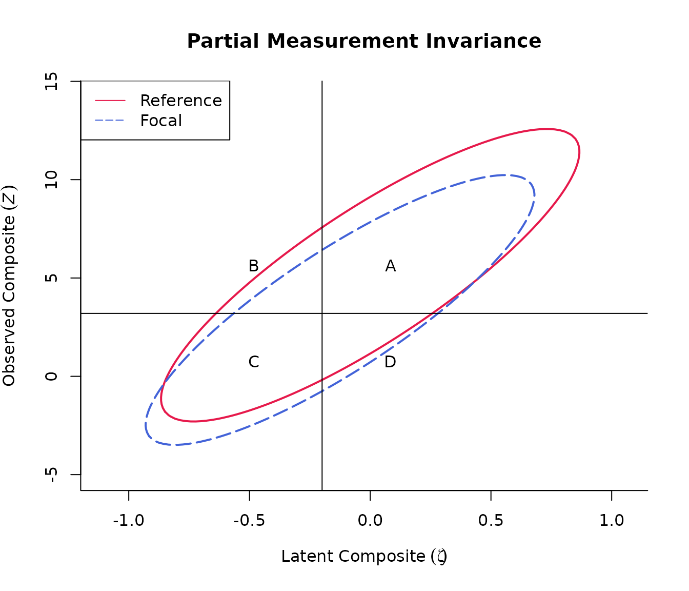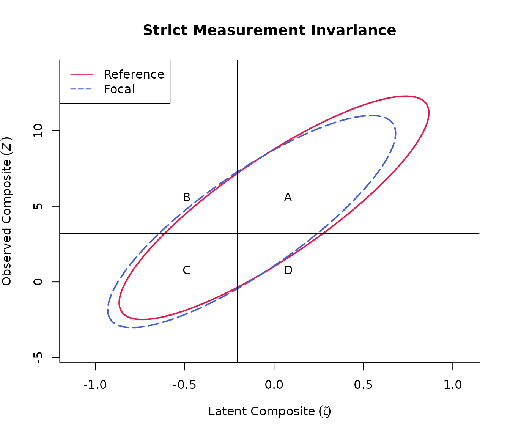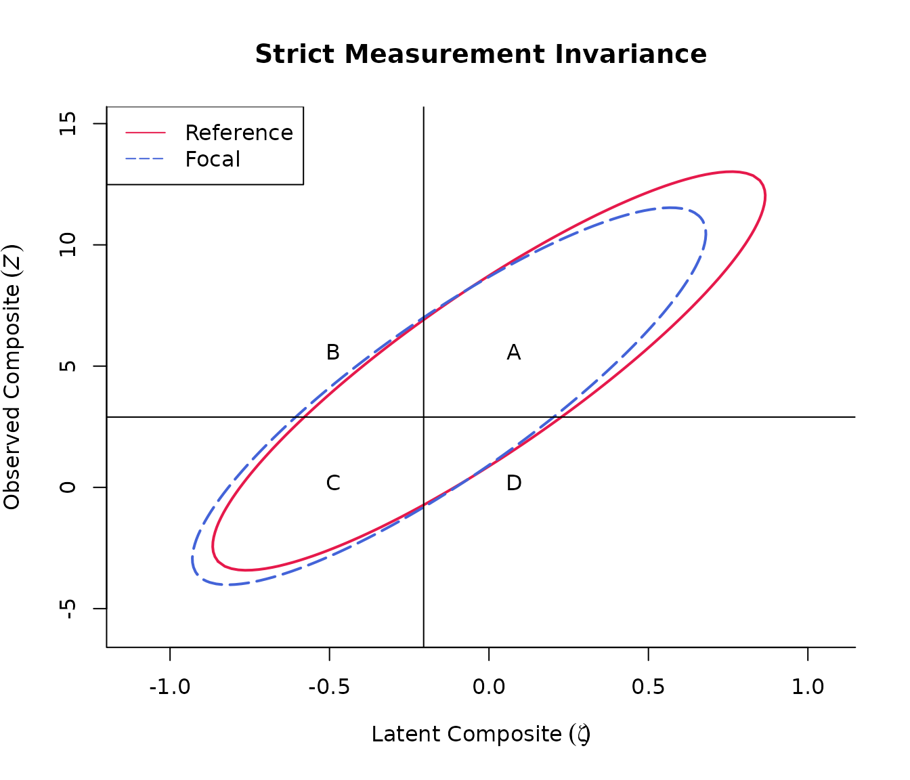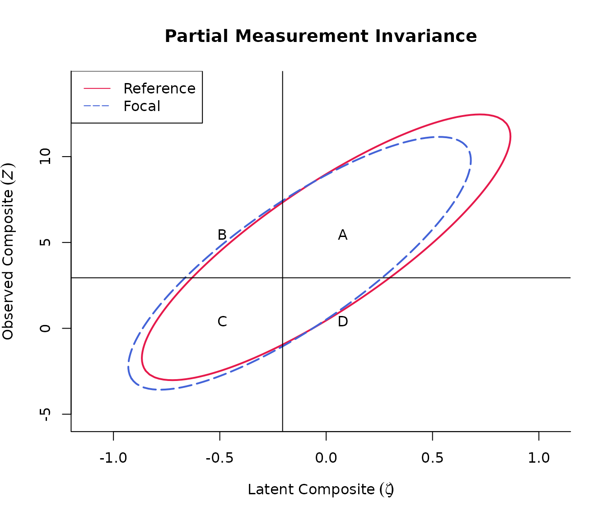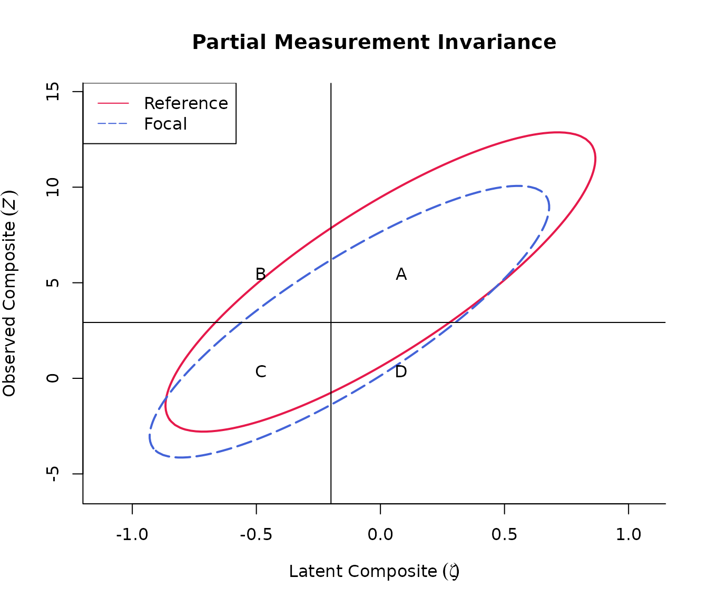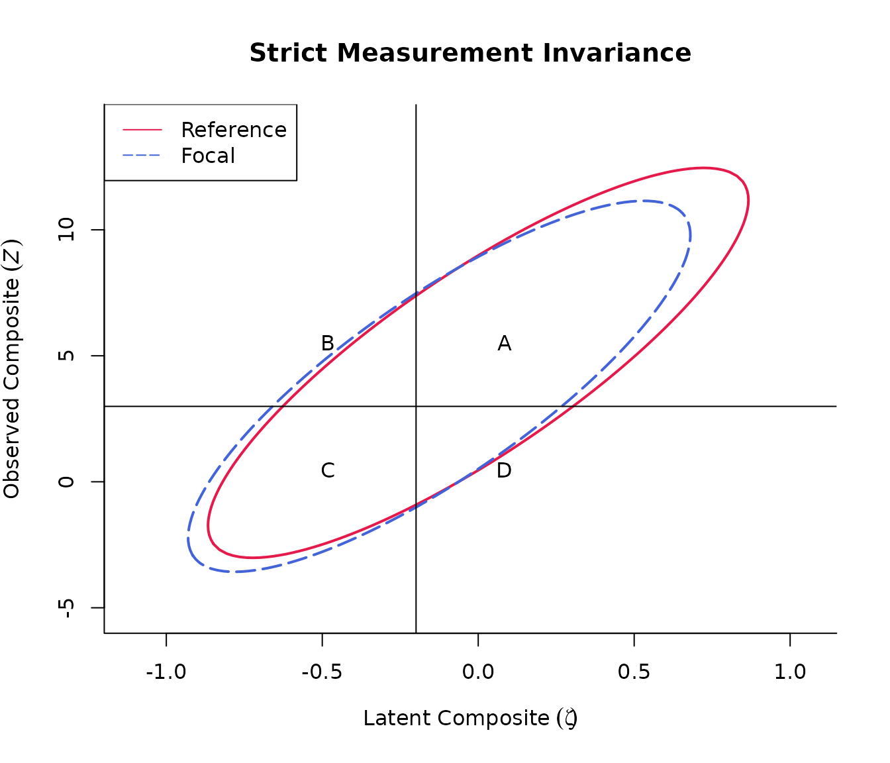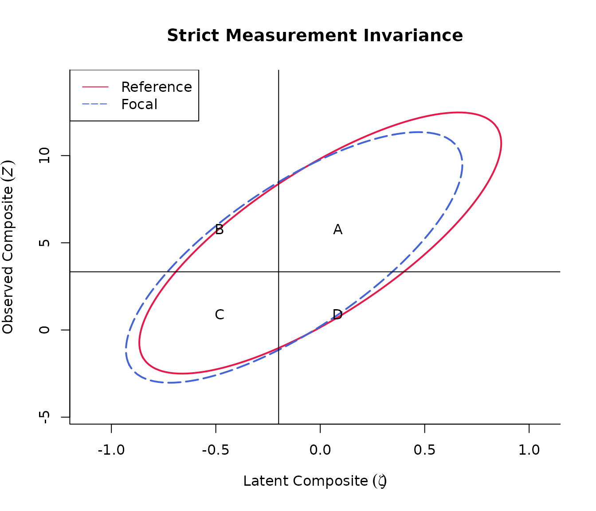 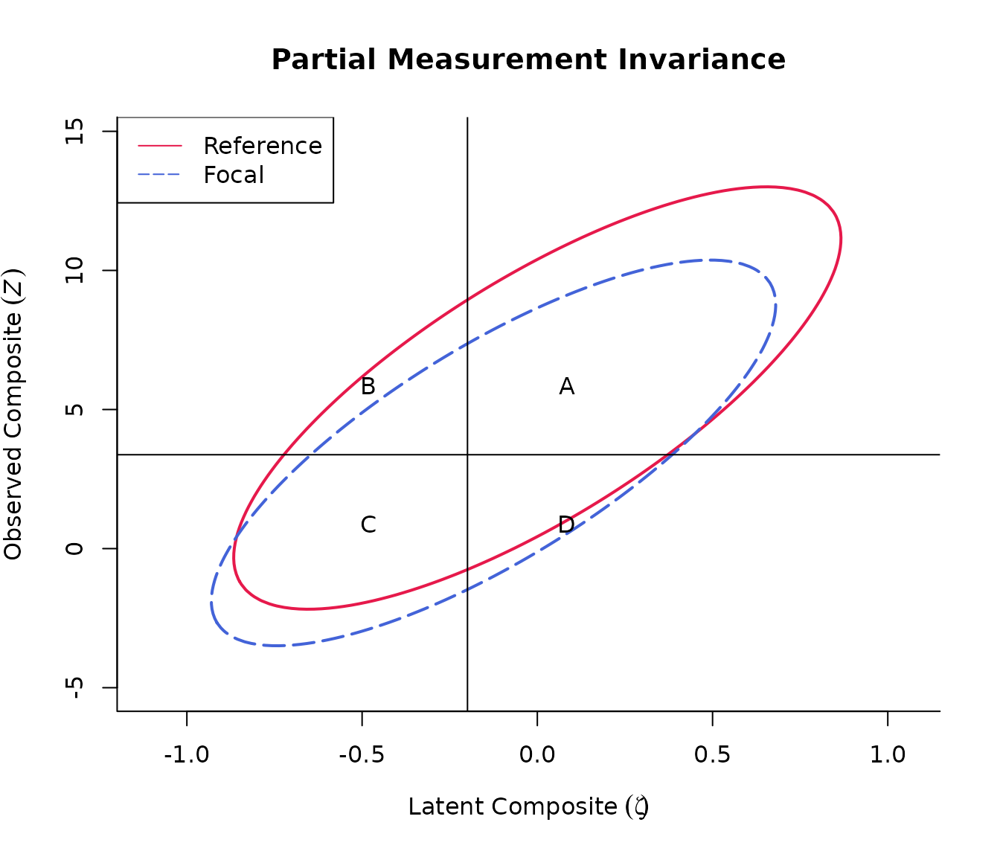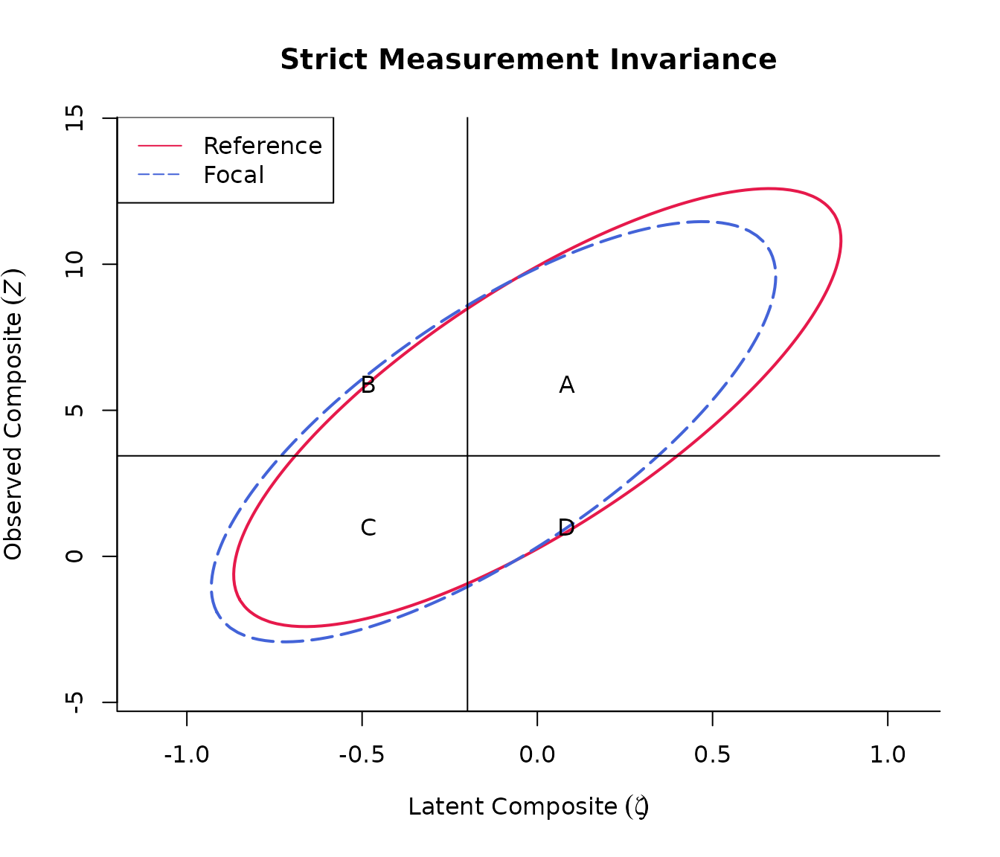
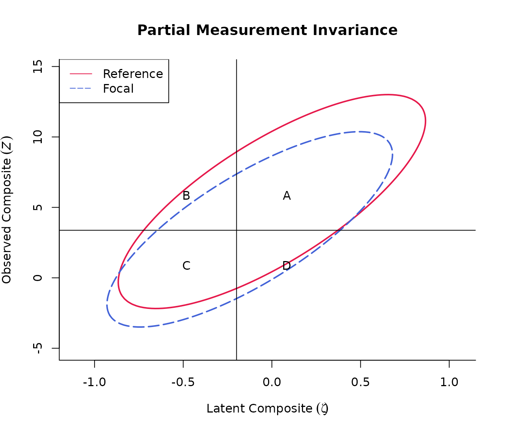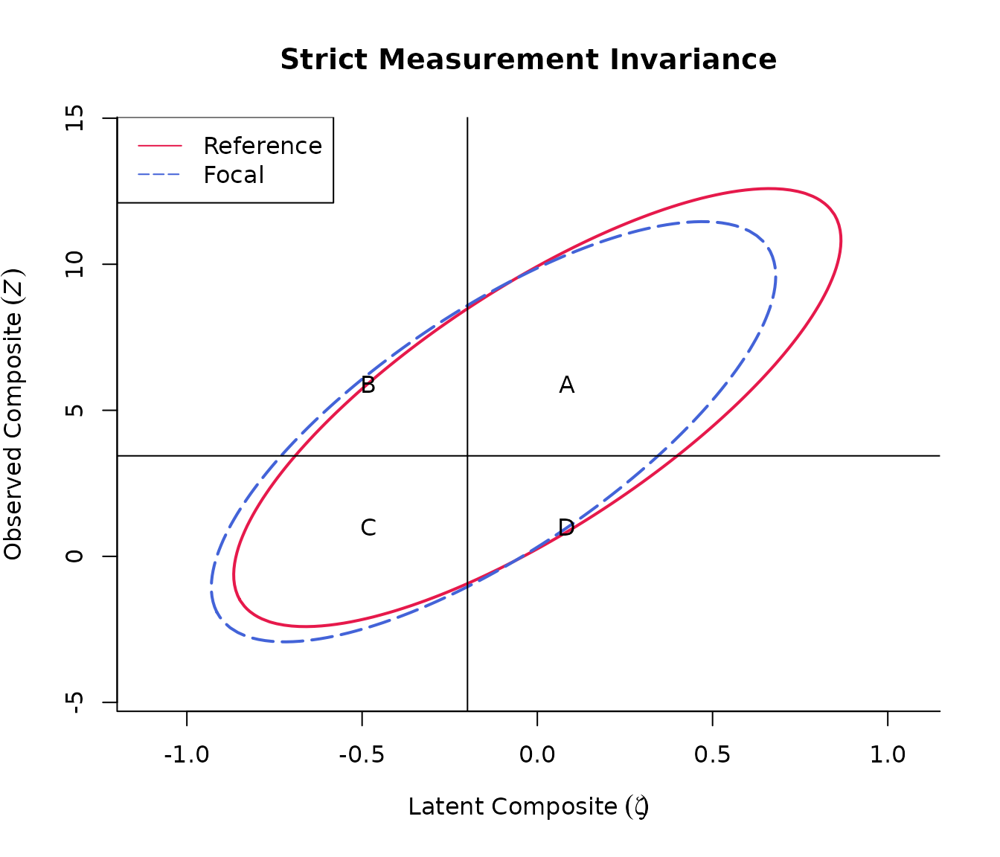
Using the summary() function:
CESD_pos <- item_deletion_h(cut_z = 16/60*12,
weights_item = c(rep(1, 4)),
weights_latent = 1,
alpha_r = alpha_POS_r,
alpha_f = alpha_POS_f,
psi_r = psi_POS_r,
psi_f = psi_POS_f,
lambda_r = lambda_POS_r,
lambda_f = lambda_POS_f,
nu_r = nu_POS_r,
nu_f = nu_POS_f,
Theta_r = Theta_POS_r,
Theta_f = Theta_POS_f,
pmix_ref = pmix_CESD_r,
plot_contour = FALSE)
summary(CESD_pos)
#> ***********************************************************************
#> AGGREGATE CLASSIFICATION ACCURACY INDICES (CAI*)
#> ***********************************************************************
#> Aggregate CAI computed for item subsets:
#> PS* SR* SE* SP*
#> full 0.679 0.883 0.883 0.752
#> |1 0.679 0.894 0.894 0.777
#>
#> Impact of deleting an item on aggregate CAI:
#> h(PS*) h(SR*) h(SE*) h(SP*)
#> |1 0 -0.037 -0.037 -0.059
#> -----------------------------------------------------------------------
#> Discrepancy between aggregate CAI under SFI vs. PFI:
#>
#> h(PS*) h(SR*) h(SE*) h(SP*)
#> SFI, PFI 0.012 0.006 0.006 -0.005
#> SFI, PFI|1 0.012 0.005 0.005 -0.005
#>
#> Impact of deleting an item on the discrepancy between aggregate CAI
#> under
#> SFI vs. PFI:
#> Δh(h(PS*)) Δh(h(SR*)) Δh(h(SE*)) Δh(h(SP*))
#> SFI, PFI|1 0 0.001 0.001 -0.001
#>
#> ***********************************************************************
#> Adverse Impact (AI) ratio for item subsets by
#> invariance condition:
#> ***********************************************************************
#> AI_SFI AI_PFI
#> full 1 0.87
#> |1 1 1.00
#>
#> ***********************************************************************
#> COMPARING CAI FOR REFERENCE AND (EXPECTED) FOCAL
#> GROUPS
#> ***********************************************************************
#> Discrepancy between CAI of reference vs. Efocal groups:
#> h(TP) h(FP) h(TN) h(FN) h(PS) h(SR) h(SE) h(SP)
#> r-Ef 0.108 0.179 -0.106 -0.185 0.208 -0.175 0.223 -0.368
#> r-Ef|1 0.000 0.000 0.000 0.000 0.000 0.000 0.000 0.000
#> -----------------------------------------------------------------------
#> Impact of deleting an item on the discrepancy between
#> CAI of reference
#> vs. Efocal groups:
#> Δh(TP) Δh(FP) Δh(TN) Δh(FN) Δh(PS) Δh(SR) Δh(SE) Δh(SP)
#> r-Ef|1 0.108 0.179 0.106 0.185 0.208 0.175 0.223 0.368
#>
#> ***********************************************************************
#> COMPARING CAI UNDER STRICT AND PARTIAL FACTORIAL
#> INVARIANCE
#> ***********************************************************************
#> Discrepancy between CAI under SFI vs. PFI for the reference group:
#> h(TP) h(FP) h(TN) h(FN) h(PS) h(SR) h(SE) h(SP)
#> SFI, PFI -0.019 -0.059 0.027 0.056 -0.056 0.058 -0.065 0.113
#> SFI, PFI|1 0.012 -0.002 -0.011 -0.002 0.012 0.005 0.005 -0.005
#>
#> Discrepancy between CAI under SFI vs. PFI for the focal group:
#> h(TP) h(FP) h(TN) h(FN) h(PS) h(SR) h(SE) h(SP)
#> SFI, PFI 0.092 0.145 -0.096 -0.130 0.171 -0.140 0.181 -0.250
#> SFI, PFI|1 0.014 -0.001 -0.013 -0.001 0.013 0.006 0.006 -0.006
#> -----------------------------------------------------------------------
#> Impact of deleting an item on the discrepancy between
#> CAI under SFI
#> vs. PFI for the reference group:
#> Δh(TP) Δh(FP) Δh(TN) Δh(FN) Δh(PS) Δh(SR) Δh(SE) Δh(SP)
#> SFI, PFI|1 0.007 0.057 0.015 0.054 0.044 0.053 0.059 0.108
#>
#> Impact of deleting an item on the discrepancy between CAI under SFI
#>
#> vs. PFI for the focal group:
#> Δh(TP) Δh(FP) Δh(TN) Δh(FN) Δh(PS) Δh(SR) Δh(SE) Δh(SP)
#> SFI, PFI|1 0.078 0.143 0.083 0.129 0.158 0.134 0.175 0.244
#>
#> ***********************************************************************
#> CAI under SFI vs. PFI for the reference group
#> ***********************************************************************
#>
#> Reference group, full item set:
#> SFI PFI h
#> True Positive 0.641 0.650 -0.019
#> False Positive 0.072 0.088 -0.059
#> True Negative 0.209 0.199 0.027
#> False Negative 0.077 0.063 0.056
#> Proportion Selected 0.713 0.738 -0.056
#> Success Ratio 0.899 0.881 0.058
#> Sensitivity 0.893 0.912 -0.065
#> Specificity 0.744 0.693 0.113
#> -----------------------------------------------------------------------
#>
#> Reference group, if item 1 is dropped:
#> SFI PFI h
#> True Positive 0.649 0.643 0.012
#> False Positive 0.065 0.066 -0.002
#> True Negative 0.216 0.221 -0.011
#> False Negative 0.069 0.070 -0.002
#> Proportion Selected 0.714 0.709 0.012
#> Success Ratio 0.909 0.907 0.005
#> Sensitivity 0.904 0.902 0.005
#> Specificity 0.769 0.771 -0.005
#>
#> ***********************************************************************
#> CAI under SFI vs. PFI for the focal group
#> ***********************************************************************
#>
#> Focal group, full item set:
#> SFI PFI h
#> True Positive 0.512 0.466 0.092
#> False Positive 0.097 0.059 0.145
#> True Negative 0.307 0.352 -0.096
#> False Negative 0.084 0.123 -0.130
#> Proportion Selected 0.609 0.525 0.171
#> Success Ratio 0.841 0.889 -0.140
#> Sensitivity 0.859 0.791 0.181
#> Specificity 0.760 0.858 -0.250
#> -----------------------------------------------------------------------
#>
#> Focal group, if item 1 is dropped:
#> SFI PFI h
#> True Positive 0.520 0.513 0.014
#> False Positive 0.087 0.087 -0.001
#> True Negative 0.317 0.323 -0.013
#> False Negative 0.076 0.076 -0.001
#> Proportion Selected 0.607 0.600 0.013
#> Success Ratio 0.857 0.854 0.006
#> Sensitivity 0.872 0.870 0.006
#> Specificity 0.785 0.787 -0.006
#>
#> ***********************************************************************
#> PartInv() outputs under Strict Factorial Invariance (SFI)
#> ***********************************************************************
#>
#> Under SFI, full item set:
#>
#> Partial invariance results:
#>
#> Proportion selected: 0.684
#> Cutpoint on the latent scale (xi): -0.205
#> Cutpoint on the observed scale (Z): 3.2
#> Adverse impact ratio (reference group: 'Reference'):
#> Focal
#> 1
#>
#> Classification Accuracy Indices:
#> Reference Focal E_R(Focal)
#> True Positive 0.641 0.512 0.641
#> False Positive 0.072 0.097 0.072
#> True Negative 0.209 0.307 0.209
#> False Negative 0.077 0.084 0.077
#> Proportion Selected 0.713 0.609 0.713
#> Success Ratio 0.899 0.841 0.899
#> Sensitivity 0.893 0.859 0.893
#> Specificity 0.744 0.760 0.744
#> -----------------------------------------------------------------------
#>
#> Under SFI, if item 1 is dropped:
#>
#> Partial invariance results:
#>
#> Proportion selected: 0.684
#> Cutpoint on the latent scale (xi): -0.205
#> Cutpoint on the observed scale (Z): 2.899
#> Adverse impact ratio (reference group: 'Reference'):
#> Focal
#> 1
#>
#> Classification Accuracy Indices:
#> Reference Focal E_R(Focal)
#> True Positive 0.649 0.520 0.649
#> False Positive 0.065 0.087 0.065
#> True Negative 0.216 0.317 0.216
#> False Negative 0.069 0.076 0.069
#> Proportion Selected 0.714 0.607 0.714
#> Success Ratio 0.909 0.857 0.909
#> Sensitivity 0.904 0.872 0.904
#> Specificity 0.769 0.785 0.769
#>
#>
#> Strict invariance results:
#>
#> Proportion selected: 0.684
#> Cutpoint on the latent scale (xi): -0.205
#> Cutpoint on the observed scale (Z): 2.899
#>
#> Classification Accuracy Indices:
#> Reference Focal
#> True Positive 0.649 0.520
#> False Positive 0.065 0.087
#> True Negative 0.216 0.317
#> False Negative 0.069 0.076
#> Proportion Selected 0.714 0.607
#> Success Ratio 0.909 0.857
#> Sensitivity 0.904 0.872
#> Specificity 0.769 0.785
#>
#> ***********************************************************************
#> PartInv() outputs under Partial Factorial Invariance (PFI)
#> ***********************************************************************
#>
#> Under PFI, full item set:
#>
#> Partial invariance results:
#>
#> Proportion selected: 0.679
#> Cutpoint on the latent scale (xi): -0.199
#> Cutpoint on the observed scale (Z): 3.2
#> Adverse impact ratio (reference group: 'Reference'):
#> Focal
#> 0.87
#>
#> Classification Accuracy Indices:
#> Reference Focal E_R(Focal)
#> True Positive 0.650 0.466 0.598
#> False Positive 0.088 0.059 0.044
#> True Negative 0.199 0.352 0.243
#> False Negative 0.063 0.123 0.115
#> Proportion Selected 0.738 0.525 0.642
#> Success Ratio 0.881 0.889 0.931
#> Sensitivity 0.912 0.791 0.839
#> Specificity 0.693 0.858 0.846
#>
#>
#> Strict invariance results:
#>
#> Proportion selected: 0.684
#> Cutpoint on the latent scale (xi): -0.205
#> Cutpoint on the observed scale (Z): 3.2
#>
#> Classification Accuracy Indices:
#> Reference Focal
#> True Positive 0.641 0.512
#> False Positive 0.072 0.097
#> True Negative 0.209 0.307
#> False Negative 0.077 0.084
#> Proportion Selected 0.713 0.609
#> Success Ratio 0.899 0.841
#> Sensitivity 0.893 0.859
#> Specificity 0.744 0.760
#> -----------------------------------------------------------------------
#>
#> Under PFI, if item 1 is dropped:
#>
#> Partial invariance results:
#>
#> Proportion selected: 0.679
#> Cutpoint on the latent scale (xi): -0.199
#> Cutpoint on the observed scale (Z): 2.951
#> Adverse impact ratio (reference group: 'Reference'):
#> Focal
#> 1
#>
#> Classification Accuracy Indices:
#> Reference Focal E_R(Focal)
#> True Positive 0.643 0.513 0.643
#> False Positive 0.066 0.087 0.066
#> True Negative 0.221 0.323 0.221
#> False Negative 0.070 0.076 0.070
#> Proportion Selected 0.709 0.600 0.709
#> Success Ratio 0.907 0.854 0.907
#> Sensitivity 0.902 0.870 0.902
#> Specificity 0.771 0.787 0.771
#>
#>
#> Strict invariance results:
#>
#> Proportion selected: 0.679
#> Cutpoint on the latent scale (xi): -0.199
#> Cutpoint on the observed scale (Z): 2.951
#>
#> Classification Accuracy Indices:
#> Reference Focal
#> True Positive 0.643 0.513
#> False Positive 0.066 0.087
#> True Negative 0.221 0.323
#> False Negative 0.070 0.076
#> Proportion Selected 0.709 0.600
#> Success Ratio 0.907 0.854
#> Sensitivity 0.902 0.870
#> Specificity 0.771 0.787